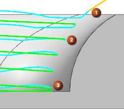
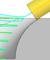
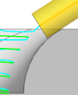
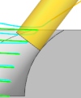
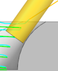
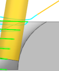
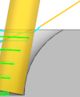

Shift the tool down by a constant value
You will shift the tool down 4 mm and observe the differences in the tool path.
-
In the Drive Method group, in the Method row, click Edit
 .
.
The Contour Profile Drive Method dialog box is displayed.
-
In the Contact Position group, set the following:
-
Ring Height = Constant
-
Distance = 4 mm
The Ring Height option controls how much tool shift is allowed in the tool path.
-
-
Click OK.
The Contour Profile dialog box is displayed.
-
In the Actions group, click Generate
 .
.

-
Click Verify
 .
.
-
Click the tool path at the locations shown to see the tool placement.

Notice the differences in the tool path and where the tool contacts the wall.
Shift distance
None
4 mm






-
Click OK to close the Tool Path Visualization dialog box.